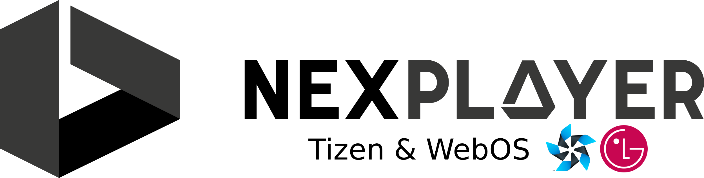
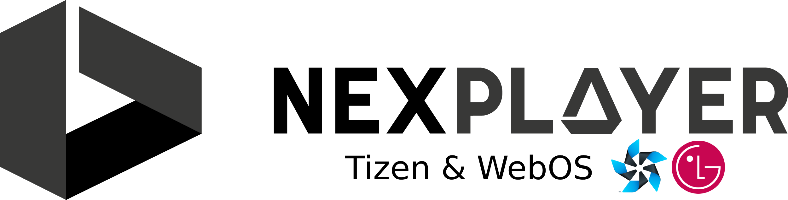

NexPlayer for Tizen and WebOS
Abstract
NexPlayer™ provides a media player for Smart TVs operating on Tizen or WebOS. It includes support for HLS, DASH, and progressive download.
The default UI is easily customizable to fit the user´s personal preferences (e.g. icons, colors, etc).
NexPlayer™ Capabilities and Features
- Integrated UI
- Protocols:
- HLS playback
- DASH playback
- Progressive download (MP4)
- Adaptive Bitrate (ABR) and UHD video
- ID3 tags
- Low Latency Streaming
- Trick play
- Multiple audio tracks
- Subtitles:
- WebVTT
- CEA 608/708
- TTML
- Time-shifting
- DRM:
- Widevine (WebOS)
- PlayReady (Tizen and WebOS)
- AES
- Custom HTTP headers